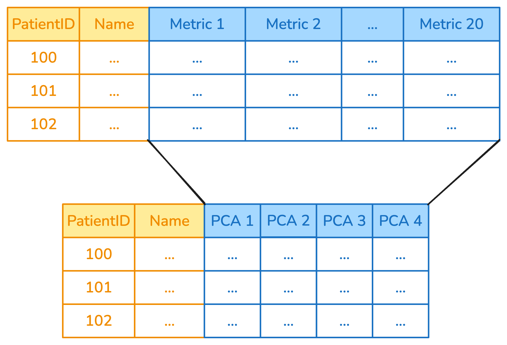

from skrub import SelectCols, DropCols
import pandas as pd
df = pd.DataFrame({
"user_id": [0, 1, 2],
"date": ["03 January 2023", "04 February 2023","14 April 2023" ],
"city": ["Paris", "London", "Rome"],
"metric_1": [10.3, 20.7, 30.8],
"metric_2": [3.5, 22.3, 45.1]
})Column-specific transformers
Why Column-Specific Transformations?
Different columns must be handled in different ways.
Why Column-Specific Transformations?
- Some transformers (e.g., the
StandardScaler) work only on numeric columns - Some transformers (e.g., the
OneHotEncoder) work only on categorical columns - Different columns with the same dtype may need to be treated differently (e.g., one has outliers and requires a
RobustScaler, an integer ID should not be scaled) - Some transformations only make sense for a subset of the columns (e.g., parsing datetimes)
Applying transformers to columns with ApplyToCols
ApplyToCols is a meta-transformer: it applies a transformer to columns that can be selected by name, or with filters.
Depending on the transformer, ApplyToCols either clones it and applies a copy to each column, or forwards all the columns to the same transformer.
Columns that are not selected pass through without changes.
from skrub import ApplyToCols
from sklearn.preprocessing import OrdinalEncoder
ordinal = ApplyToCols(OrdinalEncoder(), cols="city")
transformed = ordinal.fit_transform(df)
transformed| user_id | date | metric_1 | metric_2 | city | |
|---|---|---|---|---|---|
| 0 | 0 | 03 January 2023 | 10.3 | 3.5 | 1.0 |
| 1 | 1 | 04 February 2023 | 20.7 | 22.3 | 0.0 |
| 2 | 2 | 14 April 2023 | 30.8 | 45.1 | 2.0 |
Example: ApplyToCols to encode
ApplyToCols(OneHotEncoder(), cols=["Name", "Desc"])

Example: ApplyToCols to decompose
ApplyToCols(PCA(), cols=s.glob("metric_*"))

Exclude specific columns
For example, apply the StandardScaler only to the metric_* columns, excluding the column user_id.
import skrub.selectors as s
from sklearn.preprocessing import StandardScaler
scaler = ApplyToCols(StandardScaler(), cols=s.numeric(), exclude_cols="user_id")
scaler.fit_transform(df)| user_id | date | city | metric_1 | metric_2 | |
|---|---|---|---|---|---|
| 0 | 0 | 03 January 2023 | Paris | -1.230675 | -1.183668 |
| 1 | 1 | 04 February 2023 | London | 0.011948 | -0.078389 |
| 2 | 2 | 14 April 2023 | Rome | 1.218727 | 1.262056 |
Chaining Transformers
Use a scikit-learn Pipeline to concatenate multiple transformers, when wrapped in ApplyToCols:
from sklearn.pipeline import make_pipeline
from sklearn.preprocessing import OneHotEncoder
select = SelectCols("department-name")
encode = ApplyToCols(OneHotEncoder(sparse_output=False))
reduce = ApplyToCols(PCA(n_components=2))
transform = make_pipeline(select, encode, reduce)
Tip
Remember that columns that are not selected pass through without any change.
Example: convert to datetime and encode
from skrub import ToDatetime, DatetimeEncoder
from sklearn.pipeline import make_pipeline
df = pd.DataFrame({
"date": ["03 January 2023", "04 February 2023"],
"city": ["Paris", "London"],
"values": [10, 20]
})
encode_datetime = make_pipeline(
ApplyToCols(ToDatetime(), cols="date"),
ApplyToCols(DatetimeEncoder(), cols="date"),
)
encode_datetime.fit_transform(df)| date_year | date_month | date_day | date_total_seconds | city | values | |
|---|---|---|---|---|---|---|
| 0 | 2023.0 | 1.0 | 3.0 | 1.672704e+09 | Paris | 10 |
| 1 | 2023.0 | 2.0 | 4.0 | 1.675469e+09 | London | 20 |
Order Matters!
Transformers should be ordered carefully:
# Encode first, then scale
transform_1 = make_pipeline(
ApplyToCols(OneHotEncoder(sparse_output=False), cols=s.string()),
# Strings are now numbers!
ApplyToCols(StandardScaler(), cols=s.numeric())
)
# vs. Scale first, then encode
transform_2 = make_pipeline(
ApplyToCols(StandardScaler(), cols=s.numeric()),
# Strings haven't been touched
ApplyToCols(OneHotEncoder(sparse_output=False), cols=s.string())
)The allow_reject Parameter
When allow_reject=True, columns that can’t be transformed are passed through:
from skrub import ApplyToCols, ToDatetime
with_reject = ApplyToCols(ToDatetime(), allow_reject=True)
result = with_reject.fit_transform(df)This is useful when you don’t know if a column may be rejected or not (e.g., you don’t know which columns are acually datetimes).
Selection Operations
SelectCols and DropCols filter columns based on rules:
from skrub import SelectCols, DropCols
import pandas as pd
df = pd.DataFrame({
"date": ["03 January 2023", "04 February 2023"],
"city": ["Paris", "London"],
"values": [10, 20]
})Selection Operations
# By name
SelectCols("date").fit_transform(df)| date | |
|---|---|
| 0 | 03 January 2023 |
| 1 | 04 February 2023 |
Selection Operations
DropCols("date").fit_transform(df)| city | values | |
|---|---|---|
| 0 | Paris | 10 |
| 1 | London | 20 |
More advanced selection rules in the next chapter!
What we have seen in this chapter
ApplyToCols: Apply a transformer to columns selected withcols, exclude withexclude_cols- Chain transformers with scikit-learn pipelines
allow_reject: Reject columns that cannot be treatedSelectCols/DropCols: Filter columns with thecolsparameter